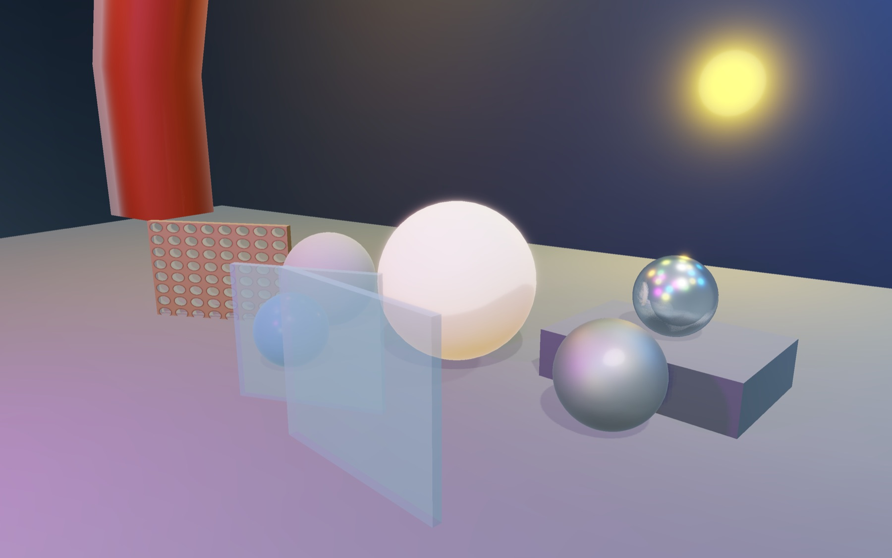
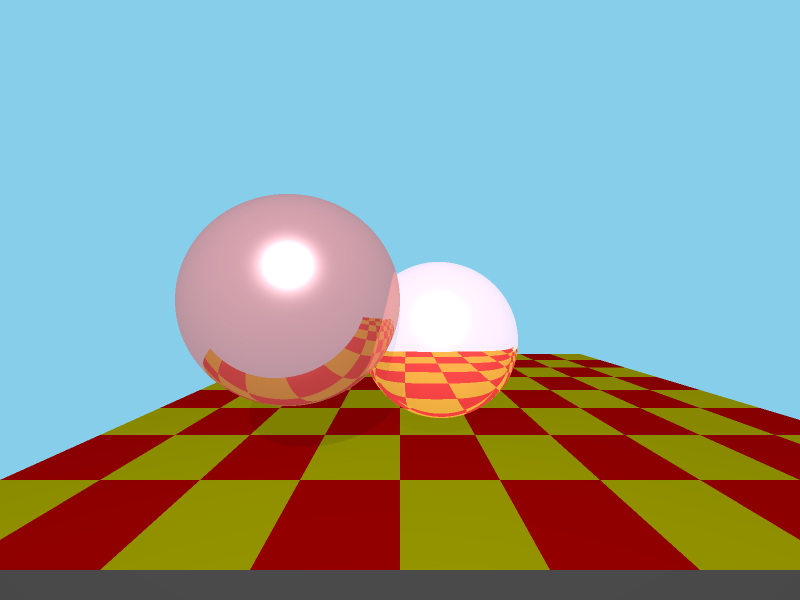
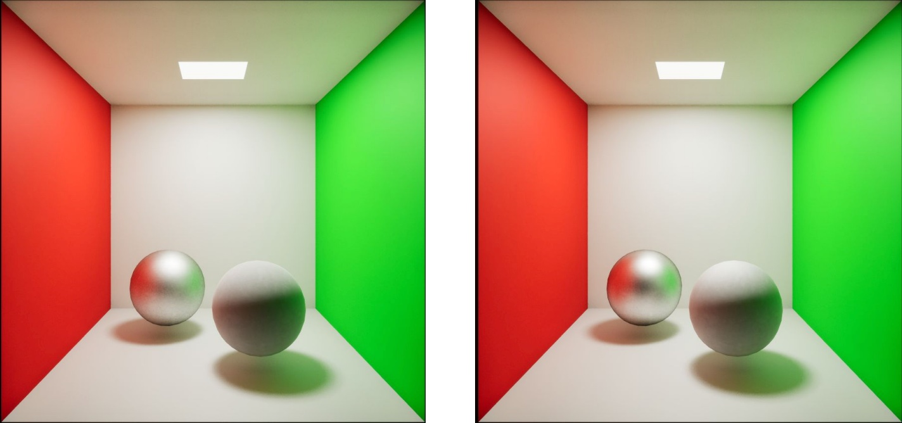
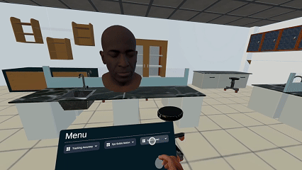
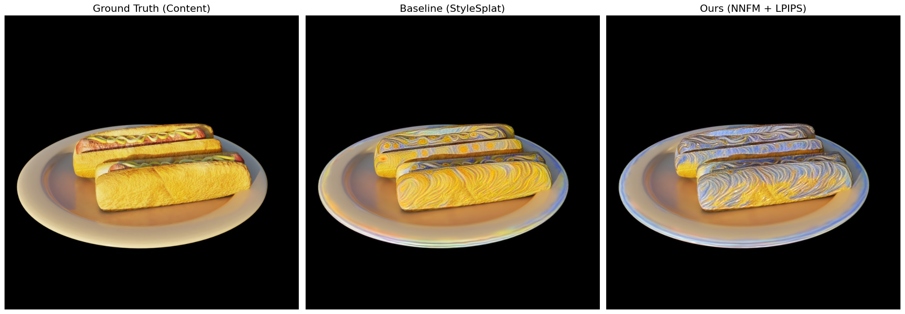

王滋涵（Zihan Wang）
RIT 计算机科学硕士（2026 届）｜厦门大学数字媒体技术本科｜网易 VR / 阿里 Unity 实习｜前 RIT MAGIC Spell Studios VR Developer
主要求职方向（已毕业，可立即入职）：引擎开发工程师 / 图形渲染工程师 / 游戏客户端底层开发。
技术主线：C++20 / Vulkan 1.3 实时渲染器（GPU-Driven、Render Graph、Async Compute、多路径阴影）、UE5 引擎源码修改、GPU 性能测量与工程化。
补充方向：XR 实时交互系统、3D AI / Neural Rendering、CUDA。
主要求职方向（已毕业，可立即入职）：引擎开发工程师 / 图形渲染工程师 / 游戏客户端底层开发。
技术主线：C++20 / Vulkan 1.3 实时渲染器（GPU-Driven、Render Graph、Async Compute、多路径阴影）、UE5 引擎源码修改、GPU 性能测量与工程化。
补充方向：XR 实时交互系统、3D AI / Neural Rendering、CUDA。
C++20 引擎开发
Vulkan 1.3 / OpenGL
GPU-Driven / Hi-Z 剔除
Render Graph / Async Compute
CSM / VSM / Ray Query
UE5 源码 / Path Tracer
GPU Profiling / CI
OpenXR / Meta SDK
招聘定位：面向国内图形渲染、引擎开发、游戏客户端底层与 XR 实时系统岗位。作品集重点证明：不是只做 Demo，而是能围绕 GPU-Driven 管线、Render Graph、同步、阴影方案和可复现的性能测量构建可解释、可验证的图形系统。
建议浏览顺序：Vulkan Engine → UE5 Path Tracer AOV → UE5 BRDF → OpenGL Engine → 技术专题 → 简历 PDF。面试深挖建议从 GPU-Driven 剔除、Render Graph 与 Async Compute、阴影方案取舍、Path Tracer 采样与正确性验证展开。
~6 万行
独立开发的 C++20 / Vulkan 1.3 实时渲染器，RAII 封装 RHI，三平台 CI。
3.78 ms
Sponza 1080p 整帧耗时（RTX 3080 Ti Laptop），自建 per-pass timestamp profiler 测量。
6.07 → 0.33 ms
曝光 pass 优化（直方图 + LDS 归约），按 A/B 测量协议对比。
代表项目｜面向图形渲染与引擎开发岗位
全部
引擎开发
图形渲染
XR/VR
AI/视觉
Vulkan 实时渲染器（VulkanEngine）
C++20Vulkan 1.3GLSLGPU-DrivenRender GraphAsync ComputeVSMRay Query
- 约 6 万行自有代码，基于 Dynamic Rendering、Synchronization2、VMA 构建 RAII 封装的 RHI 层。
- GPU-Driven：Bindless 材质 + Multi-Draw Indirect，Compute 视锥剔除与两阶段 Hi-Z 遮挡剔除，在同一 dispatch 内完成离线 LOD 链选择。
- 光照与阴影：Clustered Forward+（32 × 18 × 24 froxel）跑在 Async Compute 队列上，与阴影 pass 重叠；实现带缓存的 CSM、Virtual Shadow Maps（LRU 页表）与 VK_KHR_ray_query 光追阴影三条阴影路径。
- Render Graph：由 pass 读写声明推导执行顺序、自动生成 Barrier、管理瞬态资源与生命周期，每帧校验实际录制与声明一致。
- 性能与工程：自建 per-pass timestamp profiler 与 A/B 测量协议；曝光 pass 6.07 → 0.33 ms（直方图 + LDS 归约）；Sponza 1080p 整帧 3.78 ms（RTX 3080 Ti Laptop）；Catch2 + 三平台 CI（ASan/UBSan、lavapipe 图像回归）。
可深挖点
- 两阶段 Hi-Z 遮挡剔除、Compute 视锥剔除与 LOD 选择合并在同一 dispatch
- Render Graph 执行顺序推导、自动 Barrier、瞬态资源与每帧录制校验
- Clustered Forward+ 与阴影 pass 在 Async Compute 上的重叠
- CSM / VSM / Ray Query 三条阴影路径的质量、显存与性能取舍

工程难点
- 剔除与 LOD 选择移到 GPU 后，CPU 不再逐物体提交，需要保证间接绘制参数、可见性数据与 Hi-Z 两阶段之间的正确性。
- Async Compute 与图形队列并行，需要 Render Graph 正确表达跨队列依赖与同步。
- 三条阴影路径共存且可切换，便于在同一场景下对比质量、显存和耗时。
- 性能结论依据 per-pass 时间戳和 A/B 测量协议，并用 CI 图像回归防止优化引入画面错误。
UE5 Path Tracer 软边 ShadowMask AOV（引擎源码修改）
C++HLSLUE 5.7.4Path TracingMovie Render Queue
- 修改 UE 5.7.4 渲染链路，在 Path Tracer 首次弹射处对指定光源做面光源可见性采样，复用引擎的 Sobol 采样器与 TLAS shadow ray。
- 与 Beauty 共享样本累积，经 Movie Render Queue 输出线性 EXR；功能关闭时零开销。
- 自定义光源 ID 贯通 LightComponent → SceneProxy；配置错误时输出全无效 mask，而不是一张看似正常的错图。
- 验证脚本显示 RMSE 约按 1/√N 收敛，重复渲染结果 SHA-256 一致。
可深挖点
- UE 渲染数据流：LightComponent → SceneProxy → Path Tracer shader 的改动路径。
- 为什么在首次弹射采样、与 Beauty 共享样本累积，以及如何保证关闭时零开销。
- 如何证明结果正确：收敛曲线 + 确定性哈希，以及配置错误时“宁可无效、不出错图”的设计。
OpenGL 模块化渲染引擎（CGRenderEngine）
C++OpenGLGLSLPBRHDR
- 从零构建模块化 OpenGL 渲染引擎（PBR、阴影、HDR、Bloom、后处理），Scene 与渲染数据解耦。
- 实例化 + 状态排序使 233 物体场景 draw call 从 442 降到 35（−92%）。
- 实现 PBR、Shadow Mapping、Framebuffer 后处理、Tone Mapping 与基础调试流程，建立从 CPU 资源提交到 GPU 渲染输出的完整管线理解。
- 扩展光线追踪与超采样实验，用于对比实时光栅化与离线渲染中的采样、阴影、反射和噪声收敛问题。
工程价值
- 作为 Vulkan Engine 前置项目，系统训练 Shader、Material、Texture、Framebuffer 和 Post-process 的模块边界设计。
- 通过实时光栅化与离线光线追踪对比，建立对渲染方程、采样、阴影质量和性能开销的统一理解。

UE5 渲染模块：多次散射 BRDF 能量补偿（Kulla–Conty）
C++HLSLUnreal Engine 5PBR
- 基于 Kulla–Conty 多次散射思想实现 BRDF 能量补偿，改善高粗糙度 GGX 材质在单次散射模型下的能量损失问题。
- 编写 Monte Carlo 积分工具生成 BRDF 补偿 LUT，以白炉测试验证能量守恒，并在 UE5 中通过自定义 HLSL 节点接入材质流程。
- 对比 baseline GGX 与补偿后的材质表现，梳理 Fresnel、NDF、Geometry Term、split-sum 与 LUT 查表之间的工程关系。
面试价值
- 能从渲染方程、微表面 BRDF、能量守恒和实时查表优化角度解释 PBR 模块，而不是只停留在材质效果展示。
- 适合深挖 Monte Carlo 积分、LUT 预计算、split-sum approximation 与 UE 材质系统接入方式。

VR 实时交互系统：恐怖谷效应实验（Uncanny Valley VR）
UnityMeta SDKFace Tracking
- 构建基于 Meta Quest Pro 面部追踪的 VR 实验系统，将用户表情实时映射到虚拟角色，用于研究表情真实度、噪声与恐怖谷感知之间的关系。
- 用自适应 EMA 平滑 + 追踪丢失时状态保持建立稳定基线，再注入可控的表情噪声、眼部微动与材质变量，降低 tracking 抖动、输入丢失和表情不连续带来的干扰。
- 项目体现 XR 交互、实时角色驱动、用户实验设计、Unity 工程实现和实时反馈稳定性处理能力。
工程难点
- VR 输入数据存在抖动、丢帧和不连续，需要在低延迟反馈与平滑稳定之间做权衡。
- 面部 tracking、角色表情映射、眼部微动和材质变量需要在统一实验流程中保持可控，避免变量混杂。

基于 3DGS 的 3D 风格迁移（3DGS Style Transfer）
PyTorch3D Gaussian SplattingNNFMLPIPS
- 冻结 3DGS 几何，只优化球谐（SH）外观参数，在保持场景结构的前提下完成风格迁移。
- 以 NNFM 为基线，集成 LPIPS 感知损失，并加入双视角统计一致性约束，缓解跨视角风格不一致。
- 对比三组实验的效果与开销；作为 3D AI / neural rendering 项目补充图形主线。
与岗位的关联
- 补充展示 neural rendering、可微/学习式视觉方法与实时 3D 表示的理解。
- 适合投递 3D AI、AIGC、NeRF/3DGS、视觉与图形交叉方向时作为加分项目。

其他项目与论文
CUDAUnreal Engine
- CUDA Kernels：手写 SGEMM 逐级优化，FlashAttention 进行中。
- Horror Hotel：Unreal 恐怖解谜游戏，担任主程。
- 论文：《视觉界面对游戏心流体验的影响》。
岗位能力矩阵｜国内招聘关键词对齐
引擎 / 图形系统
C++20Vulkan 1.3OpenGLRender GraphUE5 源码
- RAII 封装的 RHI 层、Dynamic Rendering、Synchronization2、VMA 资源管理。
- Render Graph 执行顺序推导、自动 Barrier、瞬态资源与生命周期管理。
- UE5 渲染链路源码修改（LightComponent → SceneProxy → Path Tracer）、Movie Render Queue。
实时渲染技术
GPU-DrivenHi-ZClustered Forward+CSM / VSMRay Query
- Bindless + MDI、Compute 视锥 / Hi-Z 遮挡剔除、GPU LOD 选择、Async Compute。
- PBR、IBL、TAA、CSM、Virtual Shadow Maps、Ray Query / Path Tracing。
调试 / 性能 / 工程化
Sync ValidationGPU TimestampCIASan / UBSan
- Validation Layer（含 Sync Validation）、per-pass GPU timestamp profiling、Unity Profiler。
- Git、CMake、GitHub Actions、Catch2、ASan/UBSan、clang-tidy。
- XR：Meta SDK、OpenXR、ARCore/ARKit；网易 VR、阿里 Unity 与 RIT MAGIC Spell Studios 经历。
技术专题｜引擎开发能力拆解
GPU-Driven 渲染与遮挡剔除
- Bindless 材质 + MDI 让 CPU 不再逐物体提交 draw call。
- Compute 视锥剔除、两阶段 Hi-Z 遮挡剔除与离线 LOD 链选择在同一 dispatch 内完成。
Render Graph 与 Async Compute
- 由 pass 读写声明推导执行顺序，自动生成 Barrier，管理瞬态资源与生命周期。
- 每帧校验实际录制与声明一致，避免图与命令不同步。
- Clustered Forward+ 跑在 Async Compute 队列上，与阴影 pass 重叠执行。
阴影方案对比
- 带缓存的 CSM、LRU 页表管理的 Virtual Shadow Maps、Ray Query 光追阴影三条路径可切换。
- 可在同一场景下对比质量、显存占用和 GPU 耗时，讨论各方案适用场景。
物理渲染：BRDF 与 Path Tracer
- Kulla–Conty 多次散射能量补偿：Monte Carlo 生成 LUT，白炉测试验证能量守恒。
- UE5 Path Tracer 首次弹射面光源可见性采样，与 Beauty 共享样本累积，按 1/√N 验证收敛。
性能测量与工程化
- 自建 per-pass timestamp profiler 与 A/B 测量协议，曝光 pass 从 6.07 ms 降到 0.33 ms（直方图 + LDS 归约）。
- Catch2 单元测试 + 三平台 CI（ASan/UBSan、lavapipe 图像回归），防止优化引入画面错误。
实时系统与 XR 工程经验
- 在 VR 项目中用自适应 EMA 与丢失时状态保持处理追踪抖动和输入丢失。
- 作为引擎开发主线的补充，展示实时交互、性能稳定性和用户感知层面的工程判断。
经历
RIT · MAGIC Spell Studios｜VR Developer（Unreal VR）
- 基于 Unreal Engine（C++ / Blueprint）开发研究型 VR 系统，负责交互、角色/场景模块与系统集成。
- 处理 tracking 抖动、状态同步与性能稳定性问题，支持多轮用户测试。
网易（广州）｜VR 开发实习生（客户端 / 交互与性能优化）
- 基于 Unity + Quest / PICO 开发 VR 核心玩法 Demo，负责交互系统、输入反馈与场景逻辑。
- 用 Unity Profiler 定位逐帧查询和临时对象导致的 GC 尖峰，改为事件驱动 + 引用缓存 + 容器复用，尖峰帧 CPU 耗时约 20 → 13–15 ms。
阿里巴巴（杭州）｜Unity 游戏开发实习生
- 参与 Unity 游戏核心系统与玩法模块开发，负责背包系统、配置读取和资源管理相关功能。
- 优化数据组织、查询逻辑和资源引用方式，改善资源管理模块的内存占用、访问效率和可维护性。
简历摘要
王滋涵 · Zihan Wang
计算机科学硕士，主要求职方向为引擎开发与图形渲染。核心项目是独立开发的约 6 万行 C++20 / Vulkan 1.3 实时渲染器（GPU-Driven、Render Graph、Async Compute、CSM / VSM / Ray Query 阴影），以及 UE 5.7.4 Path Tracer 源码修改；另有 OpenGL 引擎、UE5 BRDF、3DGS 风格迁移与 VR 实时交互系统等项目。作品集重点展示从底层图形 API、渲染管线组织到可复现性能测量的工程能力。
- 目标岗位：引擎开发工程师、图形渲染工程师、游戏客户端底层开发工程师、XR 实时系统工程师。
- 核心方向：引擎开发、实时渲染、GPU-Driven 管线、阴影与光照、离线 / 路径追踪渲染。
- 核心技术：C++20、C#、Python、GLSL / HLSL；Vulkan 1.3、OpenGL；Unreal Engine 5（引擎源码修改、Movie Render Queue）、Unity。
- 工程能力：Render Graph、Validation Layer（含 Sync Validation）、GPU Timestamp Profiling、CMake、GitHub Actions、Catch2、ASan/UBSan、clang-tidy。
- 教育背景：RIT 计算机科学硕士（2026 年毕业）；厦门大学数字媒体技术本科。
联系
- 电话：184-6332-5253
- 邮箱：zihanwang7@outlook.com
- GitHub：github.com/ZihanWG
- 作品集：zihanwg.github.io/ZihanW.github.io
- 简历：assets/resume.pdf
微信二维码